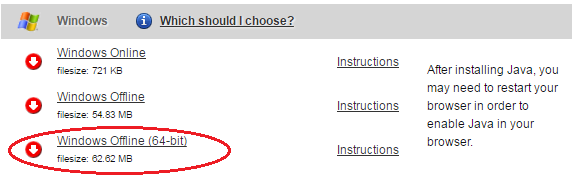
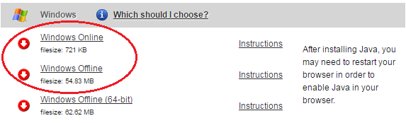

PAMGuard Cannot Start
Pamguard is unable to start because it cannot find a valid installation of Java on this computer. A 64-bit install of PAMGuard requries the 64-bit version of Java, and a 32-bit install of PAMGuard requries the 32-bit version of Java. Typically on a Windows machine, Java will be installed in one of these default locations:
Java can be downloaded from the official Oracle Java website: http://java.com/en/download/manual.jsp.
If you have already installed Java but are still seeing this message, there is a good chance that you have installed the wrong version. The Java website gives many options for downloading Java. If you have installed 64-bit PAMGuard, you must make sure you download the version of Java specifically marked as 64-bit:

If you have installed 32-bit PAMGuard, you need to download one of the other versions:

(it would have been nice if Oracle had made this clearer...)
When PAMGuard can't find Java, it's not necessarily looking in the folders listed above. Instead, PAMGuard refers to the Windows Registry which should contain links to the correct installation folders. If you have installed the correct version of Java and still cannot start PAMGuard, it's possible that the registry settings are corrupted. Try uninstalling all versions of Java (there's a good chance you have a number of them on your machine) and reinstalling the latest version. If you still have problems, contact us at support@pamguard.org and we'll help you to figure it out.